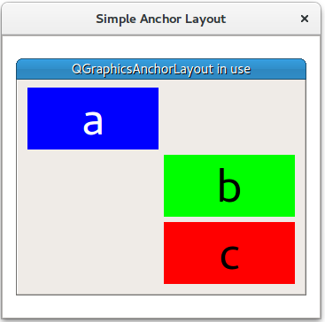

Simple Anchor Layout Example
Demonstrates anchor layout on a graphics view scene.
The Simple Anchor Layout example shows the basic use of the QGraphicsAnchorLayout class.

The example starts by creating a QGraphicsScene (scene), 3 widgets (a, b, and c), and a QGraphicsAnchorlayout (layout).
QGraphicsScene scene;
Widget *a = new Widget(Qt::blue, Qt::white, "a");
a->setPreferredSize(100, 100);
Widget *b = new Widget(Qt::green, Qt::black, "b");
b->setPreferredSize(100, 100);
Widget *c = new Widget(Qt::red, Qt::black, "c");
c->setPreferredSize(100, 100);
QGraphicsAnchorLayout *layout = new QGraphicsAnchorLayout;
First it anchors the top left corner of item a to the top left corner of layout. This can be done in two steps:
layout->addAnchor(a, Qt::AnchorTop, layout, Qt::AnchorTop);
layout->addAnchor(a, Qt::AnchorLeft, layout, Qt::AnchorLeft);
Or in one step:
layout->addCornerAnchors(a, Qt::TopLeftCorner, layout, Qt::TopLeftCorner);
Then the right anchor of a is anchored to the left anchor of b, and the top of item b is anchored to the bottom of a.
layout->addAnchor(b, Qt::AnchorLeft, a, Qt::AnchorRight);
layout->addAnchor(b, Qt::AnchorTop, a, Qt::AnchorBottom);
Place a third widget c under widget b:
layout->addAnchor(b, Qt::AnchorBottom, c, Qt::AnchorTop);
Items b and c are anchored to each other horizontally:
layout->addAnchors(b, c, Qt::Horizontal);
Item c is anchored to the bottom right point of layout
layout->addCornerAnchors(c, Qt::BottomRightCorner, layout, Qt::BottomRightCorner);
Finally, QGraphicsWidget w is displayed in QGraphicsView view.
auto w = new QGraphicsWidget(nullptr, Qt::Window | Qt::CustomizeWindowHint | Qt::WindowTitleHint);
w->setPos(20, 20);
w->setMinimumSize(100, 100);
w->setPreferredSize(320, 240);
w->setLayout(layout);
w->setWindowTitle(QApplication::translate("simpleanchorlayout", "QGraphicsAnchorLayout in use"));
scene.addItem(w);
QGraphicsView view;
view.setScene(&scene);
view.setWindowTitle(QApplication::translate("simpleanchorlayout", "Simple Anchor Layout"));
view.resize(360, 320);
view.show();
return app.exec();